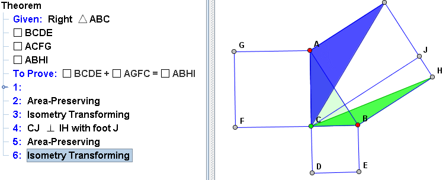

Pythagoras's Theorem.
Introduction:
In any right triangle, the area of the square whose side is the hypotenuse (the side opposite the right angle) is equal to the sum of the areas of the squares whose sides are the two legs (the two sides that meet at a right angle).
In this example, we try to build a proof for the pythagoras's theorem manually.

In the above diagram, triangle ABC is an right triangle. From three sides of the triangle, three squares are drawn. To prove the pythagoras theorem, we just need to prove the equation:
Square BCDE + Square AGFC = Square ABHI.
Now we will show how to do this step by step:
1. Preparation.
Switch the tabbed pane in the left of window to "M".

2. Input The Hypotheses.
Use action:  to draw a Right Triangle. Use the action Square
to draw a Right Triangle. Use the action Square  to draw three squares from three sides. The text of the input will be generated automatically in the left pane.
to draw three squares from three sides. The text of the input will be generated automatically in the left pane.

3. Input the Conclusion.
Click the button Add at the bottom of the Prove Pane. Choose "Keywords" --> "To Prove" at the popuped menu. Then the keywords "To Prove" will be added to the proof text indicating the input of the conclusion to be proved.

Click the button Append, choose the menu Equation on the popup menu, then the user can input the equation. Here we are going to input the equation:
Square BCDE + Square AGFC = Square ABHI.

To input the conclusion, First select the type of the elements to Square, then select the four points of the square( the user can click on the diagram pane to select the points also). Once one squre is finished, click the button "Add" to add another square.
4. The Proof.
Note: In this theorem, we don't prove the equation: Square BCDE + Square AGFC = Square ABHI directly. Instead, we draw two triangles BDE and AFG and try to prove that the sum of the area of BDE and AFG is half of the area of Squae ABHI
4.1 Use action :  (Fill Polygon ) to draw three color-filled triangle(BDE, AFG and ABC). Use the right-click menu to change the color of BDE to green. Change the color of AFG to blue.
(Fill Polygon ) to draw three color-filled triangle(BDE, AFG and ABC). Use the right-click menu to change the color of BDE to green. Change the color of AFG to blue.
4.2 Combine the generated steps in proof pane. Drag the mouse on the proof pane and select the three generated steps.

Move the mouse to other place, right click the mouse and select "Combine Selected Rows". In this way, the three selected row is combined.

5. Transform.
- 5.1 Equivelence.
- Transform the triangle AGF to AGB. Select the color-filled triangle AGF, drag point F to B.
- Transform the triangle AGB to ACI. Select the color-filled triangle AGF, right-click the mouse and select Rotate in the popuped menu. Rotate the triangle AGF to fit the triangle ACI.
- 5.3 Foot
- Draw a perpendicular line from C to IH.
- 5.4 Equivelence
- Transform the triangle ACI to AGI. Select the color-filled triangle ACI, drag point C to J.
- 5.5 Equivelence
- Transform the triangle BDE to BAE. Select the color-filled triangle BDE, drag point D to A.
- 5.5 Transform
- Transform the triangle BAE to BHC. Select the color-filled triangle BAE, right-click the mouse and select Rotate in the popuped menu. Rotate the triangle BAE to fit the triangle BHC.
- 5.7 Equivelence
- Transform the triangle BCH to BJH. Select the color-filled triangle BCH, drag point C to J.

{kind=link}
JGEX Help